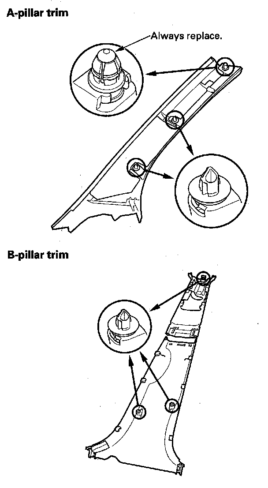
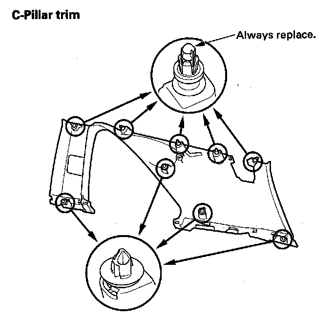
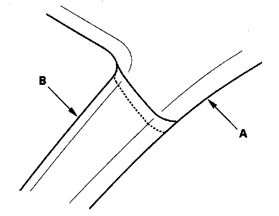
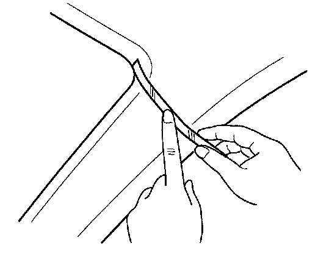
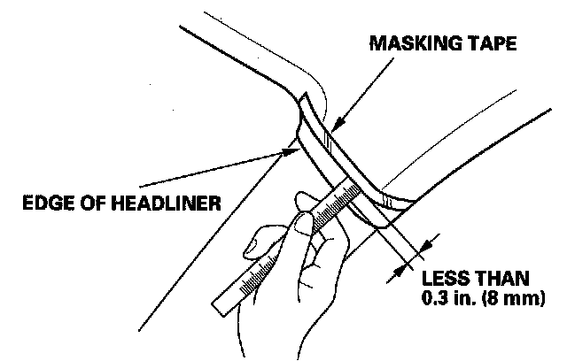
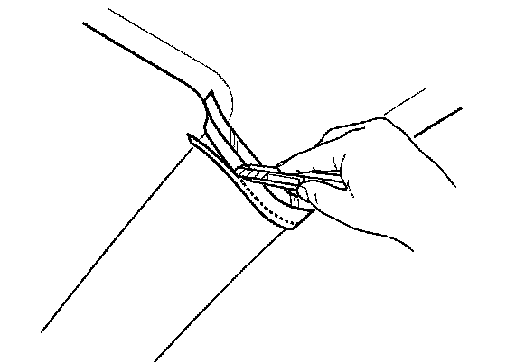

SRS Component Replacement/Inspection After Deployment
Component Replacement/Inspection After DeploymentNOTE:
- Before doing any SRS repairs, use the HDS SRS menu method to check for DTCs; refer to the DTC Troubleshooting Index Diagnostic Trouble Code Descriptions for the less obvious deployed parts (seat belt tensioners, front impact sensors, side airbag sensors, etc.)
- Do not replace the ODS unit unless it is physically damaged or a specific fault was found during DTC troubleshooting.
After a collision where the seat belt tensioners deployed, replace these items:
- SRS unit
- Seat belt tensioners
- Front impact sensors
After a collision where the front airbag(s) deployed, replace these items:
- SRS unit
- Deployed airbag(s)
- Seat belt tensioners
- Front impact sensors
After a collision where the side airbag(s) deployed, replace these items:
- SRS unit
- Deployed side airbag(s)
- Reinforcing cloth rear hooks
- Side impact sensor(s) (first) for the side(s) that deployed
- Side impact sensor(s) (second) for the side(s) that deployed
- B-pillar lower trim
- Complete seat frame
After a collision where the side curtain airbag(s) deployed, replace these items:
- SRS unit
- Deployed side curtain airbag(s)
- Seat belt tensioner(s) for the side(s) that deployed
- Side impact sensor(s) (first) for the side(s) that deployed
- Side impact sensor(s) (second) for the side(s) that deployed
- Satellite safing sensor
- Roll rate sensor
- Roof trim
- A-pillar trim
- B-pillar upper trim
- Quarter pillar trim
- Front grab handle
- Rear grab handle
- All related trim clips
- Sunvisor


After a moderate to severe side or rear collision, inspect for any damage on the side curtain airbag or other related components. Replace components as needed.
During the repair process, inspect these areas:
- Inspect all the SRS wire harnesses. Replace, do not repair, any damaged harnesses.
- Inspect the cable reel for heat damage. If there is any damage, replace the cable reel.
After the vehicle is completely repaired, turn the ignition switch ON (II). If the SRS indicator comes on for about 6 seconds and then goes off, the SRS is OK. If the indicator does not function properly, use the HDS SRS Menu Method to read the DTC. If you cannot retrieve a code, go to SRS Symptom Troubleshooting Index, Symptom Troubleshooting.
Checking and Adjusting the Headliner/Pillar Trim Overlap
To prevent the side curtain airbag from deploying and damaging the pillar trim, the overlap between the headliner and pillar trim must be less then 0.3 in. (8 mm). To check the overlap, do this:

1. Install the headliner (A) and the pillar trim (B).

2. Using masking tape on the headliner, mark the upper edge of each pillar trim.

3. Remove the pillar trim, and measure the headliner overlap.
- If the overlap is less than 0.3 in. (8 mm), remove the tape, and install the pillar trim.
- If the overlap is more than 0.3 in. (8 mm), go to step 4.

4. Carefully trim the headliner with a utility knife, reducing the overlap to less than 0.3 in. (8 mm).
5. Remove the tape, and install the pillar trim.